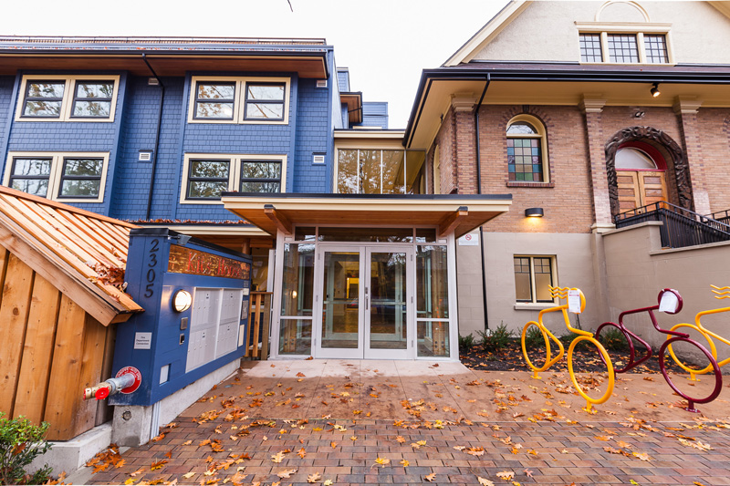
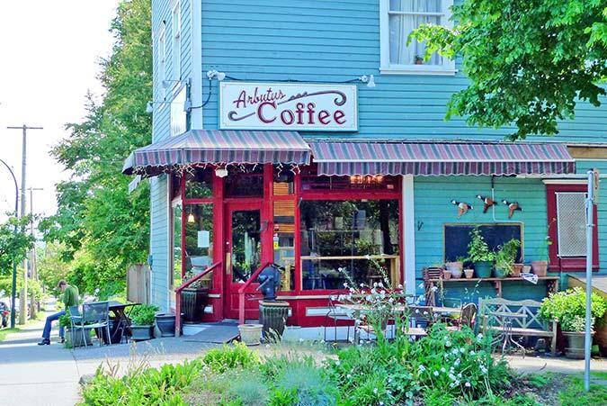
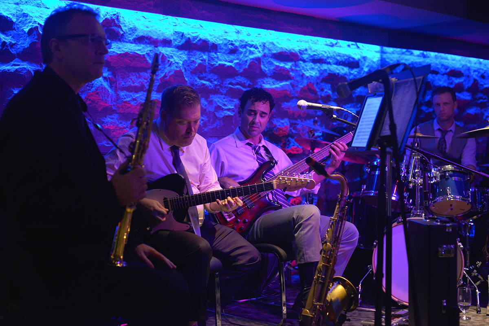
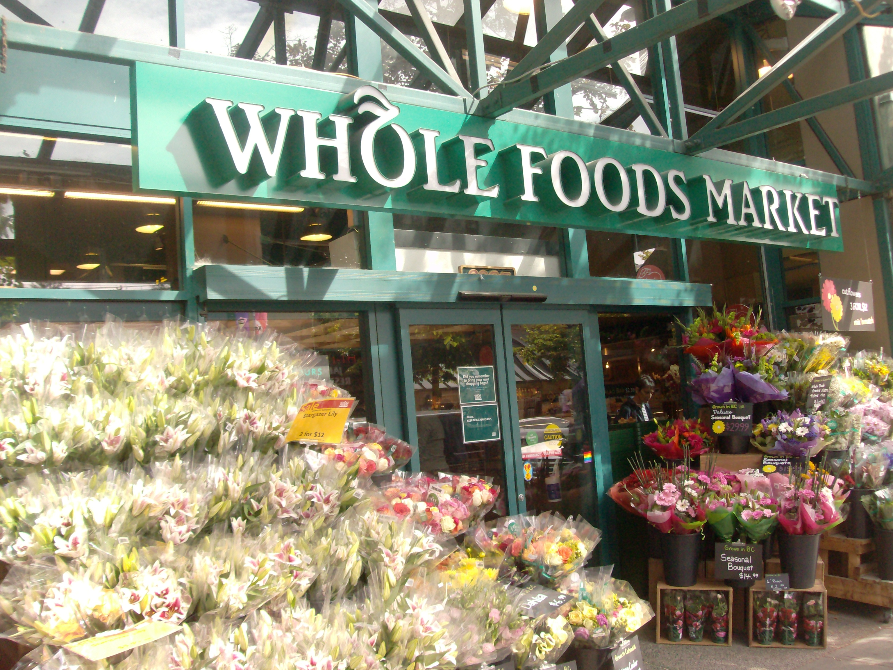
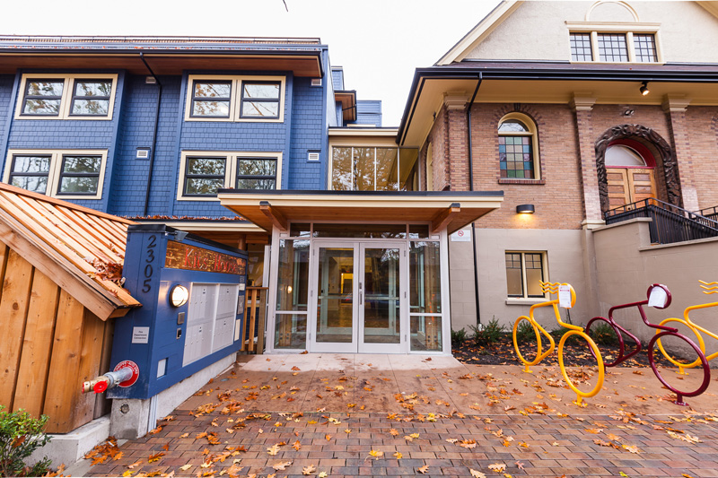
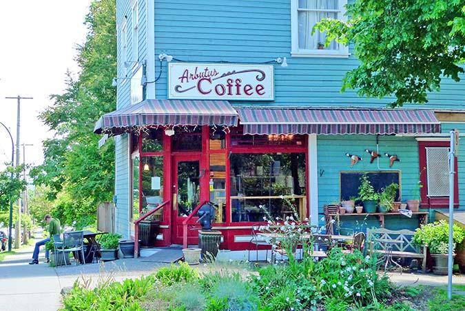
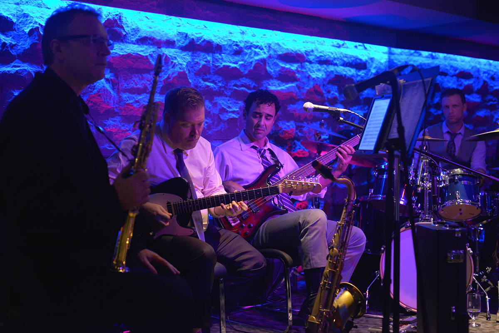
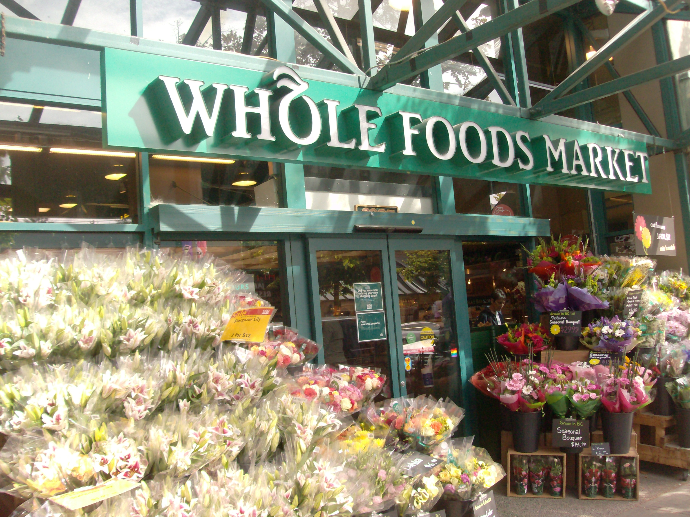

Kitsilano is a neighbourhood in the city of Vancouver, British Columbia, Canada. Known colloquially as "Kits", the neighbourhood is named after Squamish chief August Jack Khatsahlano.
With a population of 40,595 people as of 2006, the area is mostly residential with two main commercial areas, West 4th Avenue and West Broadway, known for their retail stores, restaurants and organic food markets.
A COMMUNITY NESTLED IN THE HEART OF VANCOUVER